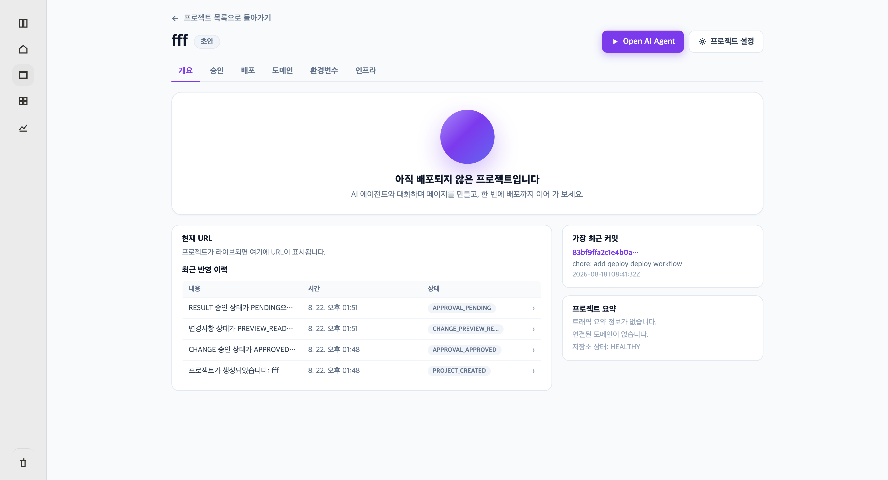

1 2 3 4Devely 1.0 Lite · 프로젝트 개요
Open AI Agent
누르면 해당 프로젝트의 AI Workspace로 이동한다. ‘프로젝트 설정’에서 이름·저장소·배포 기본값을 연다.
화면 탭
개요 / 승인 / 배포 / 도메인 / 환경변수 / 인프라. 개요가 기본이다. 목록으로 돌아가면 프로젝트 목록으로 이동한다.
현재 URL · 최근 반영 이력
배포 전이면 안내 문구만 둔다. Live면 URL을 새 탭으로 연다. 이력 행을 누르면 상세를 본다.
최근 커밋 · 프로젝트 요약
최근 커밋, 도메인, 저장소 상태를 보여 준다. 트래픽 분석 그래프는 표시하지 않는다.
■ 연결되는 기능
: AI Workspace
: 프로젝트 목록
: 프로젝트 설정
: 승인 · 배포 · 도메인 · 환경변수 · 인프라